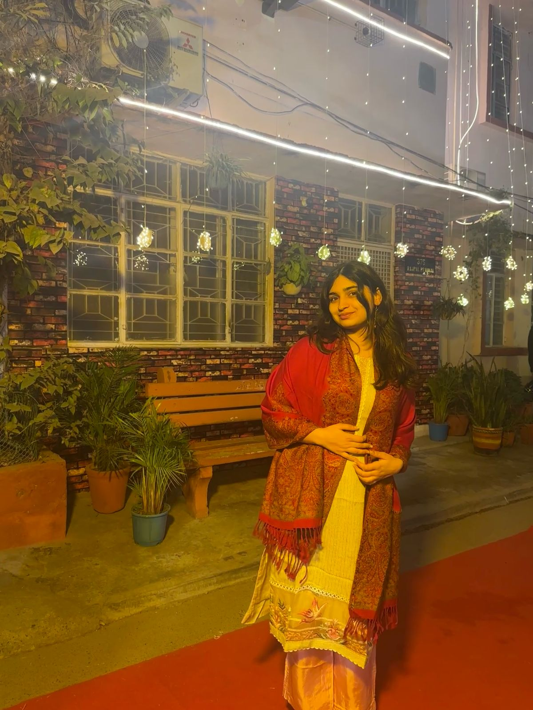
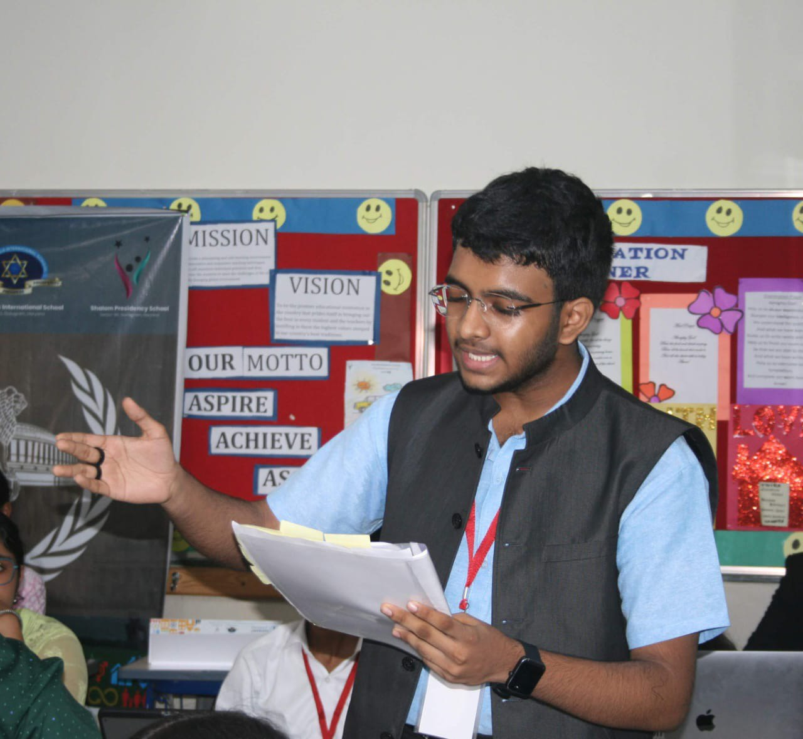

Our Founders

"Inspiring quote from the founder."

"Inspiring quote from Co Founder 1."

"Inspiring quote from Co Founder 2."
"Inspiring quote from the founder."
"Inspiring quote from Co Founder 1."
"Inspiring quote from Co Founder 2."
Details about currently running projects will go here.
Details about future initiatives will go here.